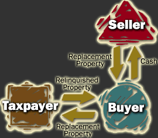

One of the misconceptions about an exchange is that it is limited to a one-on-one trade of properties. Several properties may be involved in the exchange. Many exchanges require creative, but legal maneuvering. TW Exchange provides legal expertise in structuring a transaction. Contact TW Exchange for the specifics on each of these cases or to see how your needs may be specifically met.
Single Property, Two/Three Party Exchange
The simplest exchange is a two-party simultaneous exchange of properties with equivalent fair market values and no debt.
The Two-Party Exchange is the purest form of an exchange. The relinquished property is conveyed from the Taxpayer to the Buyer and the the replacement property is conveyed from the Taxpayer to the Buyer and the replacement property is conveyed from the Buyer to the Taxpayer. Both steps of the transaction occur simultaneously.
In a Two-Party exchange, the properties are rarely of equal value, so in addition to the deeds of conveyance, one party or the other will pay cash to balance the equities.
In an ABC Exchange, also known as an "Alderson Exchange", the Buyer purchases the replacement property form the Seller and then exchanges it with the Taxpayer for the relinquished property. All of these steps occur simultaneously.
In the ACB Exchange, also known as the "Baird Exchange", the Taxpayer and the Seller exchange properties. The Seller (who has title to the relinquished property) then sells the relinquished property and to the Buyer for cash. These steps all occur simultaneously.
Multi-Party/Multi Property Exchange
In one example, three parties exchanged property in a circular manner, none of them being a direct exchange of property or funds. In another, concerning a partnership, the partners had to swap interest in their partnership so that each could receive what they needed out of an exchange.
In a Pot Exchange the Taxpayer transfers title to the relinquished property to the Buyer. The Buyer pays cash to the Seller. And the Seller transfers title to the replacement property to the Taxpayer. These steps all occur simultaneously. This type of exchange is also called "Direct Deeding".
Simultaneous Exchange with Intermediary:
The buyer or the seller is usually not willing to act as an accommodation party. After all, there is always the possibility that the exchange might fall through and that he or she will wind up owning an unwanted property. Therefore, most simultaneous exchanges are structured with an intermediary -- a party whose sole purpose in the transaction is to facilitate the exchange.
In a simultaneous exchange with an intermediary, the relinquished property is conveyed to the intermediary. The intermediary then conveys it to the buyer. The buyer pays cash to the intermediary. The intermediary pays cash to the seller who conveys the replacement property to the intermediary. The intermediary conveys the replacement property to the taxpayer. The Regulations do not state whether some of the provisions that apply to the qualified intermediary safe harbor, such as direct deeding, apply in the case of a simultaneous exchange as well as a deferred exchange. Presumably they would apply.
In a Simultaneous Exchange with an Intermediary, title to the relinquished property is transferred from the Taxpayer to the Buyer by direct deeding with the Buyer paying the purchase price to the Intermediary. The Intermediary then pays the purchase price for the replacement property to the Seller and the Seller transfers title to the property by direct deeding. This method eliminates the need for a Buyer or Seller to act as an accomodating party in the purchase of Replacement Property.
Deferred Exchange with Intermediary:
Often, at the time when the relinquished property is transferred to the buyer, the taxpayer does not yet know what property he or she wants to acquire, or the closing on the replacement property cannot be accomplished simultaneously with the relinquished property. When such is the case, a deferred exchange is necessary.
The structure of the deferred exchange with an intermediary is essentially the same as the simultaneous exchange involving an intermediary. However, since the replacement property is unknown when the relinquished property is transferred to the buyer, or the closing on the replacement property cannot be accomplished simultaneously with the relinquished property, the two legs of the exchange close at different times.
When the relinquished property transactions closes, two very important time periods are triggered concurrently. They are the 45-day identification period and the 180-day exchange period, i.e., 180 days or the due date for the tax return, including extensions.
Most deferred exchanges today are done through a qualified intermediary for several good reasons: (1) the security of using a "safe harbor" provided by the Regulations rather than relying on a patchwork of case law involving exchanges prior to the deferred exchange Regulations; (2) the reluctance of buyers to participate in the exchange beyond the closing of the relinquished property for legal and environmental reasons; and (3) the risk that an unhappy buyer may use the subsequent acquisition of the replacement property as leverage to get repairs or other concessions from the taxpayer after the closing of the relinquished property.
Reverse Exchange:
Simply stated, a reverse exchange is an exchange where the taxpayer receives the replacement property prior to the date on which the taxpayer transfers the property that is to be relinquished in the exchange.
Reverse exchanges are becoming an increasingly popular device because, for example, they give the taxpayer the ability to acquire property currently at a favorable price while deferring the transfer of the relinquished property to a time when, hopefully, a better price can be obtained. Due to the fact that IRC Sec. 1031 does not literally cover reverse exchanges and they are specifically omitted from coverage under the Regulations, many taxpayers are unwilling to do them directly because of concerns that the Internal Revenue Service will challenge whether such transactions qualify for nonrecognition under IRC Sec. 1031. In order to avoid the uncertainty surrounding the "pure" reverse exchange, a number of approaches have been adopted:
- Delay closing of the replacement property acquisition until the relinquished property can be sold through use of extended escrow period or use of option relating to the replacement property.
- "Park" or "Warehouse" the replacement property with an independent party until the relinquished property can be transferred , then do a simultaneous exchange of the two.
- Start with a simultaneous three party exchange of the relinquished property and replacement properties using an independent third party who acquires the replacement property and trades it with the taxpayer for the relinquished property, then holds the relinquished property until it can be sold.
The American Bar Association ("ABA") Section of Taxation has issued a report recommending allowance of reverse exchanges, but this has not resulted in any official sanction. The ABA's attempt is to create parallel, although not identical treatment between deferred and reverse exchanges. The mechanics would require use of qualified intermediaries and completion of the exchange by the end of the year in which the replacement property acquisition occurred or 180 days, whichever ended later.
To-Be-Built Exchanges:
A taxpayer may want a newly constructed property, or improvements to existing property, as replacement property in an exchange. If new construction or improvements are to be considered replacement property for the purpose of IRC Sec. 1031, then the work must be completed prior to the taxpayer's acquisition of the replacement property. Improvements done after the taxpayer has acquired the property do not qualify as replacement property. The Deferred Exchange Regulations provide that any additional production occurring with respect to the replacement property after the property is received by the taxpayer will not be treated as the receipt of property of like kind.
Improvements can be done by a third party prior to the taxpayer's receipt of the replacement property. The third party can be an independent third party, such as a contractor, or a qualified intermediary. If the improvements can be done within the 180-day exchange period, then they are typically done by an Intermediary. Note, however, that the Intermediary must (1) acquire a fee or fee-equivalent interest in the replacement property, (2) pay for the construction of the improvements during the 180-day period, and (3) transfer the replacement property, as improved, to the taxpayer to complete the exchange (it is critical for the Intermediary to transfer the replacement property to the taxpayer before the end of the 180-day exchange period even if the Intermediary pays for all construction costs, replacement property transferred after the 180th day is by definition not like-kind).
Leasehold Improvements Exchanges:
In a transaction similar to the To-Be-Built Exchange but where a taxpayer would like to construct improvements on real property it already owns, taxpayer, as lessor, and the qualified intermediary ("QI"), as lessee, may enter into a greater-than-thirty-year lease. The terms of the lease will require the QI to construct improvements thereon which the QI will own as leasehold improvements. The QI will then assign its interest in the leasehold and the constructed improvements to the taxpayer prior to the end of the 180-day period to complete the exchange.
Vacation Home Exchange:
Vacation homes may qualify as investment property if personal use is minimal, or the home is also rented. A property is apparently not "held for investment" within the meaning of IRC Sec. 1031 if losses from a sale or exchange of the property cannot be deducted (the same definition also applies to determine if a taxpayer may deduct the mortgage interest related to a property as a "second home"). Section 280A governs the deductibility of losses from a vacation home and therefore apparently whether the home is held for investment for the purposes of IRC Sec. 1031. Whether or not the rigid test of IRC Sec. 280A applies, a taxpayer who uses a vacation home more than incidentally during the taxable year of the exchange in probably not holding it for investment for the purposes of IRC Sec. 1031.